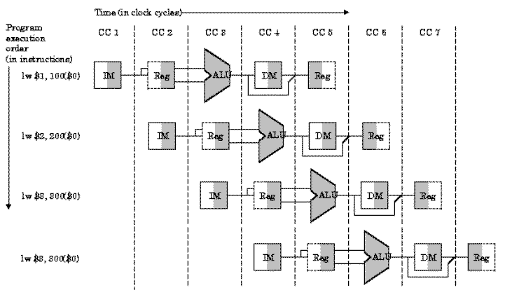

Welcome to Computer and Organization and Design
Project Description
Pipeline Simulator
Instructor : Ph.D. Sixto García Aguilar
The execution speed of programs depends on several factors. One way to increase this is to make more rapitos speed circuits are built with processors and main memory. However, the cost should be considered an improvement and that this speed limit is imposed by the current state of technology.
Another possibility is to organize the hardware to execute more than one instruction simultaneously: concurencia. Concurrency is available in two levels: At nievel processor and instruction level. Attendance at the CPU level is obtained by arranging for multiple processors running simultaneously several instricciones. Get turnout segnifica level instruction to execute multiple instructions simultaneously with a single CPU. This latter type of parallelism is called pipelining.
